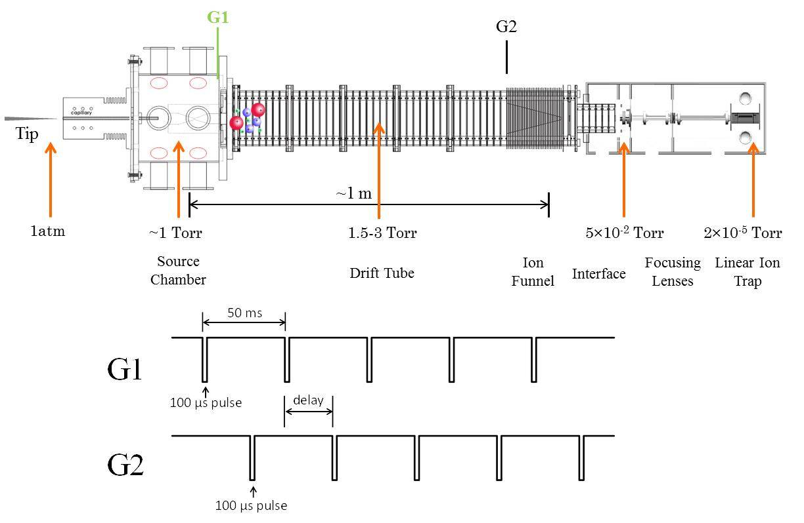
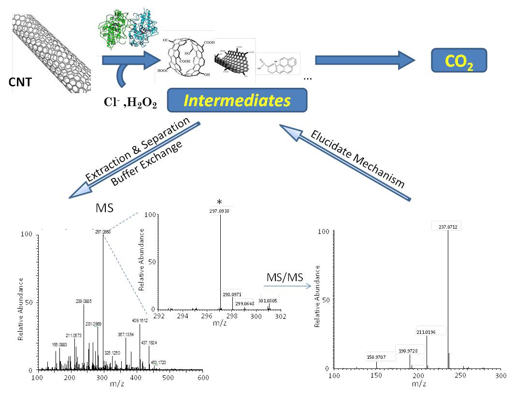

Project 1: Ion Mobility - Mass Spectrometer Instrumentation

Gas-phase separation strategies such as IMS which are introduced prior to MS analysis offer a complementary and/or additional approach to liquid chromatography (LC) methods for the enhanced separation of complex mixtures. In IMS, molecules are separated based on their collisional cross section and charge state in a drift tube filled with an inert buffer gas under the influence of a weak uniform electric field.
The timescales of the mobility separation (milliseconds) complement LC timescales (seconds to minutes) and thus, can increase the peak capacity of traditional LC/MS/MS proteomics experiments. We are developing novel IMS-based MS instruments to address the need for increased speed and experimental throughput in proteomics.
Project 2: Mass Spectrometry-Based Analysis of Degradation Products

The objective of this project is to elucidate the mechanisms of CNT degradation by mass spectrometry analysis of the intermediate products generated during the degradation. The MS-based workflow that has been developed is shown in Figure 14. Briefly, CNTs are degradated by H2O2 with presence of Cl- and MPO. The Final product is CO2. We will stop the reaction before CNTs are fully degradated, extract intermediates from the solution and use MS and MS/MS to obtain structures of them. The structural information will be further used to elucidate the degradation mechanism. The same workflow can be used to the study of GO degradation and non-enzymatic system. Samples at different reaction point will be analyzed to understand the process.